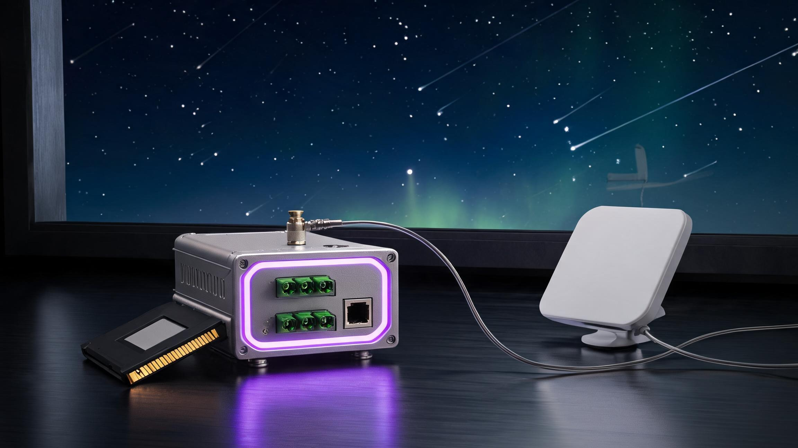

Grok Deck is an open-source hardware companion for AI agents — an industrial gateway that lets Grok touch real machines: Modbus, CAN/J1939, OBD-II, BLE, LoRa. Cloud supercompute on tap through a physical Approve gate, Starlink backhaul where there's no ground network, and prepaid compute credit in an encrypted cold-wallet cartridge.
Independent community project — not affiliated with, endorsed by, or connected to xAI. "Grok" is an xAI trademark; used here to indicate protocol compatibility only.
// THE INVARIANT
Three compute layers. One hardware boundary.
Where compute happens is negotiable. Where the boundary lives is not — five rules, enforced in hardware, identical for every agent:
gate: the mandatory authorization gate is the only path to any cloud model — no bypass, no direct API, no debug backdoor write: any agent device-write passes the physical Approve button — however large the cloud compute return: cloud responses are signed and land back on the local encrypted cartridge — nothing retained in the cloud wallet: compute credit is deducted offline inside the cartridge — the cloud never sees the balance or the identity never: raw data, personal baselines, key material — never leave the cartridge, on any layer

The satellite-backhaul edition. Local NPU sandbox at the base, xAI supercompute through the gate, Starlink where there's no ground network — compute in space, data in the card.
// THREE LAYERS
Local first. Cloud on tap. Space as backhaul.
🧠
Layer 1 — On-device NPU sandbox
A sub-4B model plus anomaly detection, resident on the gateway NPU. Baselines, weather math, risk briefs — never offloaded. Pull the network and everything still works: the offline night-shift loop is an EVT hard gate.
☁️
Layer 2 — xAI supercompute, gated
Large-model inference through the gate: consent card present → declared fields cover the request → Approve pressed. Requests carry aggregated features only; responses land signed on the cartridge. API unreachable? Degrade silently to Layer 1.
🛰️
Layer 3 — Starlink backhaul
Rangeland, pump stations, valleys — no ground network required. LoRa near-field aggregation at the node, satellite uplink at the gateway. We integrate nothing and resell nothing: users bring their own terminal. The layer is detachable by design.
local: on-device NPU sandbox — baselines · anomaly detection · weather math (offline-complete, first priority) cloud: xAI supercompute through the mandatory gate (consent card · declared fields · Approve button · signed return) space: Starlink backhaul where there's no ground network (LoRa near-field → satellite uplink) wallet: prepaid compute in the cartridge cold wallet — atomic per-call deduction (no token, no chain, no yield) boundary: data never leaves the cartridge — on any layer
// COLD WALLET
Compute credit in the cartridge — a prepaid meter, not a token
The same floppy-form encrypted cartridge that stores your data stores your prepaid compute credit. Cloud inference is priced per token, denominated at a USDT-pegged rate:
🏦
Offline balance
Credit lives in the secure element — cold storage, offline-readable, follows the card across devices. Swap the gateway, keep the balance.
⚡
Atomic deduction
Every cloud call decrements once, inside the element — double-spend impossible. Deduction records pair one-to-one with call audits.
💱
USDT-pegged pricing
Credit packs are denominated at a USDT-pegged rate. The card stores a number only — no token issued, nothing on-chain, no yield, no appreciation. A prepaid meter, not a wealth-management product.
🎁
Gift cards
Refill by one-time signed voucher, confirmed at the Approve button. A gift card is a physical voucher — give the card, give the compute.
// ONE BODY, ANY BRAIN
Five form factors. One protocol stack.
The body doesn't pick a brain. Any MHS-compatible agent — Grok, OpenWorker, your own private model — binds through the same registry and faces the same button. Swapping an agent is a software action; swapping a body is a retooling.
The lineup. Desk console · DIN-rail industrial · socket · home hub · screenless guardian pendant — all sharing the encrypted cartridge and the physical Approve/Deny gate.